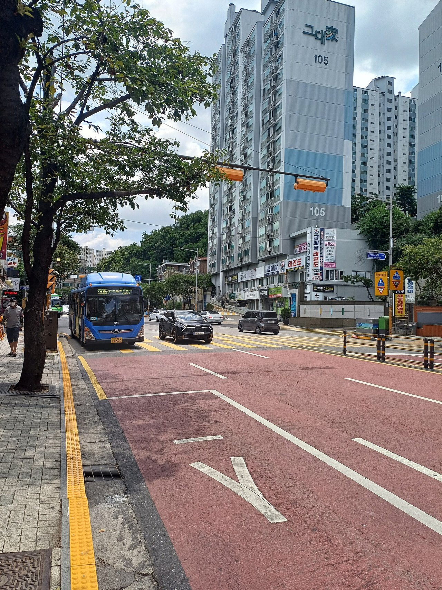
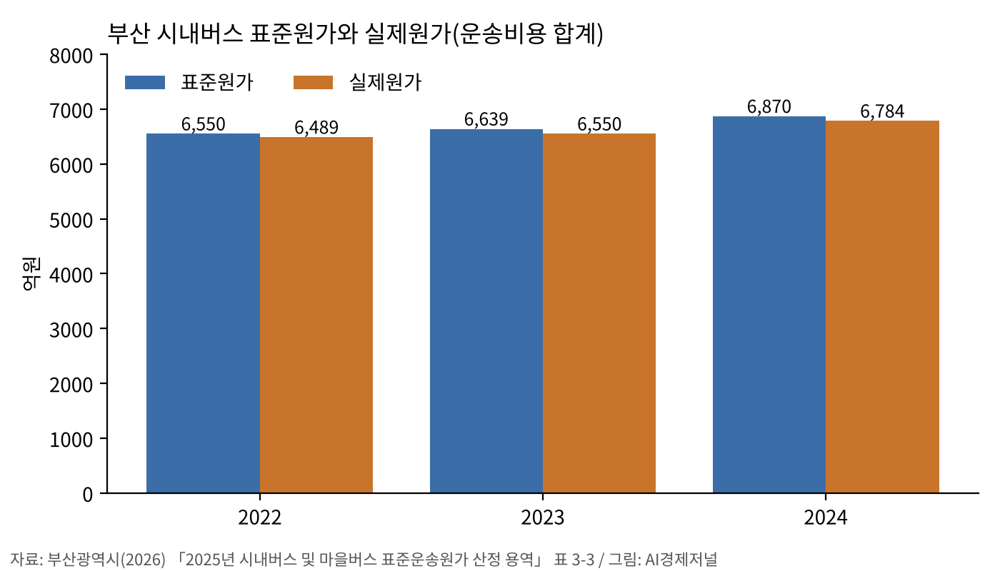

버스 1km 원가, 회사 크기보다 달리는 속도가 갈랐다
이탈리아 45개사 논문, 시속 1km에 0.58유로
부산 표준원가는 항목별 단가 합산
AI경제저널=김갑봉 기자 | 이탈리아 연구진이 버스 1km 원가를 가장 크게 좌우하는 요인은 운행 속도라고 국제학술지 『교통정책(Transport Policy)』에 밝혔다.
회사 규모에 따른 원가 절감은 작은 회사에서만 나타났다.
국내 시내버스 준공영제는 버스 1대가 하루 달리는 원가를 항목별로 정해 보전한다. 해외 연구가 원가를 무엇으로 쟀는지, 국내 원가는 어떻게 정하는지 견줘 봤다.

이탈리아, 표준원가를 회귀식으로 정했다
아베날리(Avenali) 등 연구진 5명은 2016년 『교통정책』 52권에 이 논문을 실었다. 이탈리아 13개 주에서 버스를 운행하는 45개사가 2011년 설문으로 낸 자료를 썼다.
45개사 가운데 민간은 20개, 공영은 25개다. 분석 단위는 원가를 함께 재는 계약 묶음 54개다. 운행 거리 합계는 5억 버스km가 넘는다.
버스km당 평균 원가는 3.612유로(약 5479원)였다. 원화는 유럽중앙은행 2026년 11월 6일 기준환율(1유로=1517.02원)로 환산한 AI경제저널 계산이다. 묶음 54개 가운데 연간 운행 1000만km가 넘는 대형은 13개, 400만km 아래 소형은 26개였다.
이탈리아는 2013년 예산법(법률 147/2013)에서 표준원가를 지역 대중교통 보상의 잣대로 정했다. 연구진은 실제 원가가 아니라 평균 효율 사업자의 원가를 보상하는 방식이라고 설명했다.
속도 1km/h 오르면 0.58유로 줄었다
연구진은 원가를 세 변수로 설명했다. 표정속도(정차 시간을 넣은 평균 운행 속도), 운행 규모, 차량 갱신비다. 세 변수가 원가 차이의 84%를 설명했다.
표정속도가 시속 17km 아래인 구간에서 속도가 1km/h 오르면 버스km당 원가가 0.58유로(약 880원) 줄었다. 속도가 빠른 구간으로 갈수록 줄어드는 폭은 작아졌다.
규모 효과는 연간 운행 400만km까지만 나타났다. 그보다 큰 묶음은 규모가 커질수록 원가가 올랐다. 운전원 수나 민간·공영 소유를 넣은 모형은 통계적으로 유의하지 않았다.
연구진은 버스전용차로처럼 표정속도를 높이는 정책이 단위원가를 크게 낮출 수 있다고 분석했다. 도심 경사와 역사지구 같은 조건도 함께 따져야 한다고 덧붙였다.
타이완·영국 연구는 규모와 밀도를 따로 봤다
정(Chung)·치우(Chiou)는 2024년 『트랜스포메트리카 A』에 타이완 시내버스 연구를 실었다. 58개사의 2013~2019년 자료로 비용함수를 추정했다.
이 모형은 인건비·연료비·차량비 같은 투입 가격을 함께 넣었다. 장기 총비용의 산출 탄력성은 0.569다. 운행 거리가 1% 늘면 총비용은 0.569%만 는다.
연구진은 대부분 회사에서 규모의 경제가 나타났다고 밝혔다.
다만 노선망 길이는 넣지 않았다. 회사가 망을 넓혀서 싸진 것인지, 같은 망을 촘촘히 달려서 싸진 것인지는 가르지 않았다.
휘트(Wheat)·스미스(Smith)는 2015년 영국 철도 운영사 28개사를 분석하며 노선 길이를 따로 넣었다. 표본 평균 규모수익은 0.891, 밀도수익은 1.209였다.
같은 망에서 운행을 늘리면 단위원가가 내려가고, 망을 넓히면 오히려 올라간다는 결과다. 연구진은 운영사가 정해진 망에서 운행을 늘려 단위원가를 낮출 수 있다고 분석했다.
국내 연구, 서울 81개사와 16개 시도
김성수·김민정(서울대 환경대학원)은 2001년 『대한교통학회지』에 서울 시내버스 81개사의 1996년 자료로 비용함수를 추정했다. 도시형·좌석·지역순환 버스 운행 거리를 산출로 따로 넣었다.
전반적인 규모의 경제는 작았다. 최소효율규모는 버스 265대 안팎으로 추정됐다. 연구진은 버스를 200대 이상 보유한 업체가 81개사 가운데 3개뿐이어서 대형화가 비용 최소화에 맞다고 판단했다.
최승현·조규석·유연승·도명식은 2024년 같은 학술지에 준공영제 연구를 실었다. 16개 시도의 2017~2021년 시내버스 운영효율성을 자료포락분석(DEA)으로 견줬다.
준공영제 7개 시도의 평균 기술효율성은 0.94~0.99, 민영제 9개 시도는 0.77~0.83이었다. 연구진은 효율성 차이가 운송 기술보다 규모 차이에서 생긴 것으로 판단했다.
서울·부산·인천은 5년 내내 규모수익불변 상태였다. 이 연구는 시도 합계를 버스 1대당으로 나눈 값을 써서 회사 단위 규모의 경제는 다루지 않았다.
부산 표준운송원가는 항목별 단가를 더한다
부산광역시가 지난 5월 받은 「2025년 시내버스 및 마을버스 표준운송원가 산정 용역」 최종보고서를 보면, 부산 시내버스 업체는 33개사다. 준공영제 대상 차량은 2511대다.
부산은 조례에 따라 3년마다 표준운송원가를 다시 정한다. 연료비는 표준단가에 실제 사용량을 곱한다. 운전직 인건비는 표준인원과 임금협정 임률로 정한다. 항목마다 1일 대당 단가를 매겨 더하는 방식이다.
일반 CNG버스 1대의 1일 표준운송원가는 2022년 1월 80만2750원에서 2024년 87만4469원으로 연평균 4.37% 늘었다. 보고서는 총액의 64% 넘게 차지하는 운전직 인건비가 연평균 6.40% 늘어난 것을 주된 원인으로 꼽았다.
2022~2024년 표준원가 합계는 2조59억2300만원, 실제원가는 1조9824억600만원이었다. 표준이 235억1700만원 많았다.

보고서는 연료비와 운전직 인건비에 최소한의 절감 유인을 도입하는 재산정 방향을 제시했다.
참고문헌
- Avenali, A., Boitani, A., Catalano, G., D'Alfonso, T., Matteucci, G.(2016). "Assessing standard costs in local public bus transport: Evidence from Italy". Transport Policy 52, 164–174. https://doi.org/10.1016/j.tranpol.2016.06.007
- Chung, Y.-S., Chiou, Y.-C.(2024). "Economic characteristics of city bus operation with a mixed fleet: the influence of electric buses". Transportmetrica A 20(3), 2192308. https://doi.org/10.1080/23249935.2023.2192308
- Wheat, P., Smith, A.(2015). "Do the Usual Results of Railway Returns to Scale and Density Hold in the Case of Heterogeneity in Outputs? A Hedonic Cost Function Approach". Journal of Transport Economics and Policy 49(1), 35–47
- 김성수·김민정(2001). 「서울 시내버스운송업의 규모 및 범위의 경제성 분석」. 『대한교통학회지』 19(6), 89–102
- 최승현·조규석·유연승·도명식(2024). 「시내버스 운송업의 운영효율성 분석: 준공영제와 민영제 비교를 중심으로」. 『대한교통학회지』 42(1), 94–106. https://doi.org/10.7470/jkst.2024.42.1.094
- 부산광역시(2026). 「2025년 시내버스 및 마을버스 표준운송원가 산정 용역」 최종보고서(안경회계법인). 정책연구관리시스템(프리즘) 공개, 공공누리 제1유형
[사진·도표 출처]
- [사진 1] Striker9498, 「20260626 서울특별시의 간선버스 506」, 위키미디어 공용, CC0
- [도표 1] 경세제민 AI·경제 연구소 작성(자료 부산광역시 「2025년 시내버스 및 마을버스 표준운송원가 산정 용역」 최종보고서)
관련기사
- 노동 몫 줄어든 원천, 기계값·이윤 폭·집값 셋으로 갈린다
- [항공] 같은 강풍에 김포 9분·제주 4분…공항 장비가 지연 갈랐다
- [경제] 최저임금 16.4% 오른 해, 고령 노동자 인지점수 떨어졌다
- [돌봄] 시급은 최저임금 넘는데 월급 108만8000원…요양보호사 임금이 돌봄의 질 가른다
저작권자 © AI경제저널 무단전재 및 재배포, AI학습 및 활용 금지